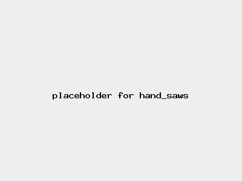

Risk Assessment / Hand saws (for wood) | Level 1 Low Risk |
|  |
|
| Before | During | After |
|---|---|---|
|
|
|
| Hazard | Persons | Before Controls | Controls | After Controls | ||||
|---|---|---|---|---|---|---|---|---|
| Severity | Likelihood | Risk | Severity | Likelihood | Risk | |||
| Cuts | Operator | Level 1 Minor injury | Level 1 Very unlikely | Level 1 Low |
| Level 1 Minor injury | Level 1 Very unlikely | Level 1 Low |
| Back injury/stress | Operator | Level 1 Minor injury | Level 3 May happen | Level 1 Low |
| Level 1 Minor injury | Level 1 Very unlikely | Level 1 Low |